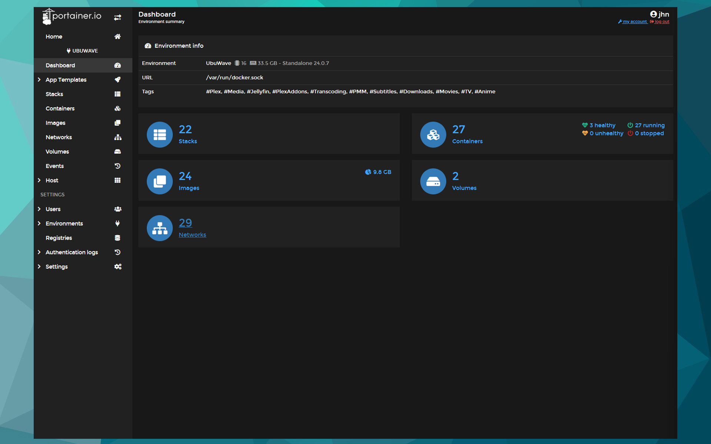

Plex Meta Manager
PMM är en metatdata redigerare partner till Plex skriven i Python. Genom att definera olika parametrar utifrån Plex inbyggda filter verktyg uppnår man tillfredställande resultat. Det går att skapa "collection" vilket är samling av objekt, "overlays" är en ikon/bild applicerad ovanpå affisch, "operations" som är underhållning. Allt detta är för att ge en förbättrad dynamisk användarupplevelse. Samtliga bilder har designats av mig i Photoshop.
GitHub Repository >

Guess the Number
Ett slumpmässigt tal mellan 0 och 100 genereras. Spelaren gissar ett tal, Om talet är samma som datorns, så får spelaren ett vinst meddelande. Om talet är lägre än datorn och över 0 får spelaren ett meddelande om att talet är för lågt. Om talet är högre än datorn och mindre än 100 får spelaren ett meddelande om att talet är för högt. Spelaren har 5 chanser på sig att gissa rätt tal.
GitHub Repository >
Play >

Responsive Sidebar
En enkel responsiv sidomeny med ikoner som öppnas och stängs med ett enkelt knapptryck. En enklare JavaScript-funktion gör att menyn kan öppnas för att visa kategorierna bredvid ikonerna.
GitHub Repository >

Linux Docker Server
Detta projekt föddes från ett långt intresse att prova på olika operativsystem, till att prova köra Linux till att dyka in Docker världen. Varje container som körs på min server valdes ut antingen för automatisering av diverse uppgifter, eller för att förbättra andra containers.